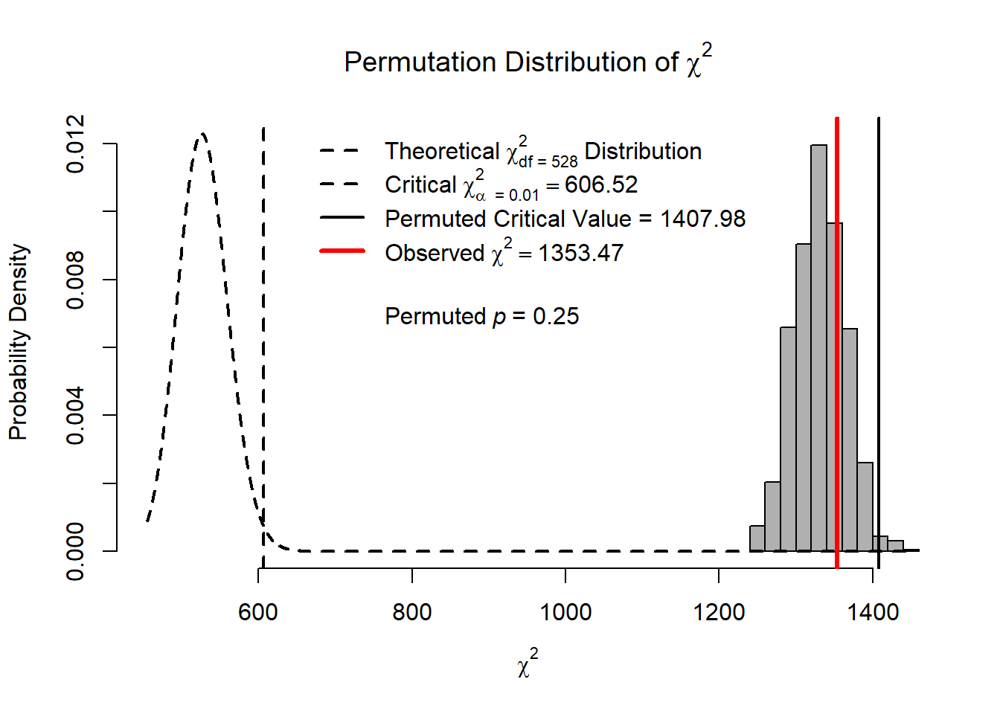
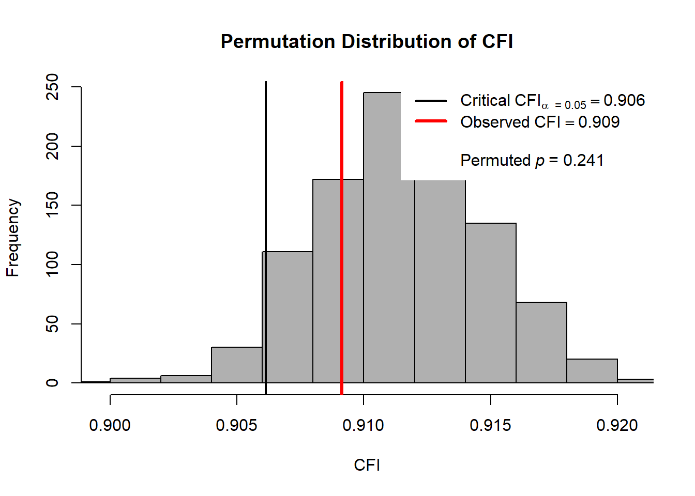

Last updated: 2021-02-18
Checks: 6 1
Knit directory: pools-projects/
This reproducible R Markdown analysis was created with workflowr (version 1.6.2). The Checks tab describes the reproducibility checks that were applied when the results were created. The Past versions tab lists the development history.
The R Markdown is untracked by Git. To know which version of the R Markdown file created these results, you’ll want to first commit it to the Git repo. If you’re still working on the analysis, you can ignore this warning. When you’re finished, you can run wflow_publish to commit the R Markdown file and build the HTML.
Great job! The global environment was empty. Objects defined in the global environment can affect the analysis in your R Markdown file in unknown ways. For reproduciblity it’s best to always run the code in an empty environment.
The command set.seed(20201007) was run prior to running the code in the R Markdown file. Setting a seed ensures that any results that rely on randomness, e.g. subsampling or permutations, are reproducible.
Great job! Recording the operating system, R version, and package versions is critical for reproducibility.
Nice! There were no cached chunks for this analysis, so you can be confident that you successfully produced the results during this run.
Great job! Using relative paths to the files within your workflowr project makes it easier to run your code on other machines.
Great! You are using Git for version control. Tracking code development and connecting the code version to the results is critical for reproducibility.
The results in this page were generated with repository version ea0a6a6. See the Past versions tab to see a history of the changes made to the R Markdown and HTML files.
Note that you need to be careful to ensure that all relevant files for the analysis have been committed to Git prior to generating the results (you can use wflow_publish or wflow_git_commit). workflowr only checks the R Markdown file, but you know if there are other scripts or data files that it depends on. Below is the status of the Git repository when the results were generated:
Ignored files:
Ignored: .Rhistory
Ignored: .Rproj.user/
Untracked files:
Untracked: analysis/development-study-CFA-invariance-test.Rmd
Untracked: analysis/development-study-CFA.Rmd
Untracked: analysis/development-study-EFA.Rmd
Untracked: analysis/development-study-data-management.Rmd
Untracked: analysis/study-1-power-calculation.Rmd
Untracked: code/laplace_functions.R
Untracked: code/pdf2png.R
Untracked: code/utility_functions.R
Untracked: data/efa_results_2021_01_06.csv
Untracked: data/fit-test.RData
Untracked: data/savedlocalfit.RData
Untracked: diagrams/
Untracked: item-review-2/expert-review-2-response1.pdf
Untracked: item-review-2/expert-review-2-response2.pdf
Untracked: item-review-2/expert-review-2-response3.pdf
Untracked: item-review-2/pilot-data-item-review.xlsx
Untracked: manuscript/
Untracked: output/cfa-final-parameterEstimates.csv
Untracked: output/cfa_results.csv
Untracked: output/corr-plot.pdf
Untracked: output/corr-residuals.pdf
Unstaged changes:
Modified: .Rprofile
Deleted: .gitattributes
Modified: .gitignore
Modified: analysis/index.Rmd
Deleted: analysis/pilot-study-CFA.Rmd
Deleted: analysis/pilot-study-EFA.Rmd
Deleted: analysis/pilot-study-data-management.Rmd
Deleted: analysis/pilot-study-power-calculation.Rmd
Modified: code/load_packages.R
Modified: data/data-2020-11-16/pools_data_split1_2020_11_16.txt
Modified: data/data-2020-11-16/pools_data_split2_2020_11_16.txt
Modified: item-review-1/response8_nov6.pdf
Modified: item-review-2/Overview of Expert Review v2.0 Results.docx
Note that any generated files, e.g. HTML, png, CSS, etc., are not included in this status report because it is ok for generated content to have uncommitted changes.
There are no past versions. Publish this analysis with wflow_publish() to start tracking its development.
source("code/load_packages.R")-- Attaching packages --------------------------------------- tidyverse 1.3.0 --v ggplot2 3.3.3 v purrr 0.3.4
v tibble 3.0.5 v dplyr 1.0.3
v tidyr 1.1.2 v stringr 1.4.0
v readr 1.4.0 v forcats 0.5.0-- Conflicts ------------------------------------------ tidyverse_conflicts() --
x dplyr::filter() masks stats::filter()
x dplyr::lag() masks stats::lag()
Attaching package: 'data.table'The following objects are masked from 'package:dplyr':
between, first, lastThe following object is masked from 'package:purrr':
transposeThis is lavaan 0.6-7lavaan is BETA software! Please report any bugs. ###############################################################################This is semTools 0.5-4All users of R (or SEM) are invited to submit functions or ideas for functions.###############################################################################
Attaching package: 'semTools'The following object is masked from 'package:readr':
clipboardThis is MIIVsem 0.5.5MIIVsem is BETA software! Please report any bugs. #################################################################This is simsem 0.5-15simsem is BETA software! Please report any bugs.simsem was first developed at the University of Kansas Center forResearch Methods and Data Analysis, under NSF Grant 1053160.#################################################################
Attaching package: 'simsem'The following object is masked from 'package:lavaan':
inspectLoading required package: multilevelLoading required package: nlme
Attaching package: 'nlme'The following object is masked from 'package:dplyr':
collapseLoading required package: MASS
Attaching package: 'MASS'The following object is masked from 'package:patchwork':
areaThe following object is masked from 'package:dplyr':
select
Attaching package: 'psychometric'The following object is masked from 'package:ggplot2':
alpha
Attaching package: 'psych'The following object is masked from 'package:psychometric':
alphaThe following object is masked from 'package:simsem':
simThe following object is masked from 'package:semTools':
skewThe following object is masked from 'package:lavaan':
cor2covThe following objects are masked from 'package:ggplot2':
%+%, alphaLoading required package: lattice
Attaching package: 'nFactors'The following object is masked from 'package:lattice':
parallel
Attaching package: 'kableExtra'The following object is masked from 'package:dplyr':
group_rowsmydata1 <- read.table("data/data-2020-11-16/pools_data_split1_2020_11_16.txt", sep="\t", header=T)
mydata2 <- read.table("data/data-2020-11-16/pools_data_split2_2020_11_16.txt", sep="\t", header=T)
mydata <- full_join(mydata1, mydata2)Joining, by = c("ID", "Progress", "DurationSeconds", "Finished", "class", "teach", "Q4_1", "Q4_2", "Q4_3", "Q4_4", "Q4_5", "Q4_6", "Q4_7", "Q4_8", "Q4_9", "Q4_10", "Q4_11", "Q4_12", "Q4_13", "Q4_14", "Q4_15", "Q4_16", "Q4_17", "Q4_18", "Q4_19", "Q5_1", "Q5_2", "Q5_3", "Q5_4", "Q5_5", "Q5_6", "Q5_7", "Q5_8", "Q5_9", "Q5_10", "Q5_11", "Q5_12", "Q6_1", "Q6_2", "Q6_3", "Q6_4", "Q6_5", "Q6_6", "Q6_7", "Q6_8", "Q6_9", "Q6_10", "Q6_11", "Q7_1", "Q7_2", "Q7_3", "Q7_4", "Q7_5", "Q7_6", "Q7_7", "Q7_8", "Q7_9", "Q7_10", "Q7_11", "Q7_12", "Q7_13", "Q7_14", "Q7_15", "version", "random.split")# transform responses to (-2, 2) scale
mydata[, 7:63] <- apply(mydata[,7:63], 2, function(x){x-3})
mydata$teach <- factor(mydata$teach, levels=c(1, 2), labels=c("No to Online Teaching Experience", "Yes to Online Teaching Experience"))use.var <- c(paste0("Q4_",c(3:5,9, 11, 15, 18)), #13
paste0("Q5_",c(1:3,5:6, 12)), #8-> 14- 21
paste0("Q6_",c(2, 5:8, 11)), #9 -> 22-30
paste0("Q7_",c(2, 4:5, 7:8, 14))) #31-38
psych::describe(
mydata[, use.var]
) vars n mean sd median trimmed mad min max range skew kurtosis se
Q4_3 1 640 -0.50 0.84 0 -0.50 1.48 -2 2 4 0.25 0.30 0.03
Q4_4 2 640 -0.41 0.83 0 -0.39 0.00 -2 2 4 -0.08 0.22 0.03
Q4_5 3 640 -0.72 0.88 -1 -0.77 1.48 -2 2 4 0.55 0.18 0.03
Q4_9 4 640 -0.57 0.99 -1 -0.62 1.48 -2 2 4 0.50 -0.20 0.04
Q4_11 5 640 -0.51 0.95 -1 -0.54 1.48 -2 2 4 0.25 -0.24 0.04
Q4_15 6 640 -0.66 0.90 -1 -0.71 1.48 -2 2 4 0.39 -0.08 0.04
Q4_18 7 640 -0.68 0.81 -1 -0.70 1.48 -2 2 4 0.45 0.32 0.03
Q5_1 8 640 -0.42 0.95 0 -0.42 1.48 -2 2 4 0.18 -0.38 0.04
Q5_2 9 640 -0.04 1.02 0 0.01 1.48 -2 2 4 -0.21 -0.52 0.04
Q5_3 10 640 -0.37 1.04 0 -0.39 1.48 -2 2 4 0.18 -0.57 0.04
Q5_5 11 640 0.49 1.05 1 0.56 1.48 -2 2 4 -0.75 -0.09 0.04
Q5_6 12 640 -0.11 0.91 0 -0.07 1.48 -2 2 4 -0.19 0.00 0.04
Q5_12 13 640 -0.16 0.98 0 -0.12 1.48 -2 2 4 -0.17 -0.16 0.04
Q6_2 14 640 -0.94 0.91 -1 -1.04 1.48 -2 2 4 0.88 0.64 0.04
Q6_5 15 640 -0.63 1.07 -1 -0.71 1.48 -2 2 4 0.66 -0.19 0.04
Q6_6 16 640 -1.18 0.80 -1 -1.28 1.48 -2 2 4 1.12 1.83 0.03
Q6_7 17 640 -0.86 0.88 -1 -0.93 1.48 -2 2 4 0.64 0.24 0.03
Q6_8 18 640 -0.87 0.87 -1 -0.94 1.48 -2 2 4 0.71 0.53 0.03
Q6_11 19 640 -0.25 0.97 0 -0.23 1.48 -2 2 4 -0.06 -0.13 0.04
Q7_2 20 640 -0.33 0.87 0 -0.31 0.00 -2 2 4 -0.32 0.10 0.03
Q7_4 21 640 -0.19 0.96 0 -0.16 1.48 -2 2 4 -0.05 -0.15 0.04
Q7_5 22 640 -0.17 0.95 0 -0.14 0.00 -2 2 4 -0.14 0.09 0.04
Q7_7 23 640 0.61 1.04 1 0.71 0.00 -2 2 4 -0.90 0.29 0.04
Q7_8 24 640 -0.19 0.91 0 -0.14 0.00 -2 2 4 -0.21 0.12 0.04
Q7_14 25 640 0.59 1.01 1 0.67 1.48 -2 2 4 -0.75 0.22 0.04psych::describeBy(
mydata[, use.var],group = mydata$teach
)
Descriptive statistics by group
group: No to Online Teaching Experience
vars n mean sd median trimmed mad min max range skew kurtosis se
Q4_3 1 379 -0.39 0.86 0 -0.39 1.48 -2 2 4 0.00 0.19 0.04
Q4_4 2 379 -0.38 0.83 0 -0.37 0.00 -2 2 4 -0.06 0.23 0.04
Q4_5 3 379 -0.66 0.88 -1 -0.72 1.48 -2 2 4 0.43 -0.09 0.05
Q4_9 4 379 -0.50 1.02 -1 -0.54 1.48 -2 2 4 0.43 -0.44 0.05
Q4_11 5 379 -0.42 0.97 0 -0.44 1.48 -2 2 4 0.08 -0.25 0.05
Q4_15 6 379 -0.63 0.93 -1 -0.68 1.48 -2 2 4 0.33 -0.33 0.05
Q4_18 7 379 -0.64 0.81 -1 -0.66 1.48 -2 2 4 0.32 0.07 0.04
Q5_1 8 379 -0.31 0.99 0 -0.29 1.48 -2 2 4 -0.07 -0.51 0.05
Q5_2 9 379 -0.01 1.03 0 0.04 1.48 -2 2 4 -0.24 -0.48 0.05
Q5_3 10 379 -0.26 1.06 0 -0.26 1.48 -2 2 4 0.02 -0.59 0.05
Q5_5 11 379 0.47 1.10 1 0.55 1.48 -2 2 4 -0.69 -0.25 0.06
Q5_6 12 379 -0.08 0.95 0 -0.03 1.48 -2 2 4 -0.24 -0.14 0.05
Q5_12 13 379 -0.15 0.99 0 -0.11 1.48 -2 2 4 -0.18 -0.22 0.05
Q6_2 14 379 -0.91 0.92 -1 -1.01 1.48 -2 2 4 0.76 0.20 0.05
Q6_5 15 379 -0.58 1.11 -1 -0.66 1.48 -2 2 4 0.64 -0.29 0.06
Q6_6 16 379 -1.16 0.84 -1 -1.27 1.48 -2 2 4 1.16 1.80 0.04
Q6_7 17 379 -0.83 0.91 -1 -0.90 1.48 -2 2 4 0.57 -0.04 0.05
Q6_8 18 379 -0.82 0.90 -1 -0.90 1.48 -2 2 4 0.72 0.41 0.05
Q6_11 19 379 -0.20 1.00 0 -0.18 1.48 -2 2 4 -0.14 -0.28 0.05
Q7_2 20 379 -0.30 0.88 0 -0.28 0.00 -2 2 4 -0.23 0.16 0.05
Q7_4 21 379 -0.16 1.00 0 -0.13 1.48 -2 2 4 -0.11 -0.26 0.05
Q7_5 22 379 -0.16 0.99 0 -0.13 1.48 -2 2 4 -0.09 -0.16 0.05
Q7_7 23 379 0.57 1.10 1 0.68 1.48 -2 2 4 -0.82 -0.03 0.06
Q7_8 24 379 -0.17 0.94 0 -0.14 0.00 -2 2 4 -0.12 0.06 0.05
Q7_14 25 379 0.63 1.02 1 0.71 1.48 -2 2 4 -0.74 0.10 0.05
------------------------------------------------------------
group: Yes to Online Teaching Experience
vars n mean sd median trimmed mad min max range skew kurtosis se
Q4_3 1 261 -0.66 0.78 -1 -0.66 0.00 -2 2 4 0.62 0.97 0.05
Q4_4 2 261 -0.46 0.84 0 -0.43 0.00 -2 2 4 -0.11 0.16 0.05
Q4_5 3 261 -0.79 0.86 -1 -0.85 0.00 -2 2 4 0.73 0.67 0.05
Q4_9 4 261 -0.67 0.92 -1 -0.74 1.48 -2 2 4 0.58 0.22 0.06
Q4_11 5 261 -0.64 0.91 -1 -0.70 1.48 -2 2 4 0.49 -0.05 0.06
Q4_15 6 261 -0.72 0.85 -1 -0.74 1.48 -2 2 4 0.47 0.36 0.05
Q4_18 7 261 -0.74 0.80 -1 -0.76 0.00 -2 2 4 0.63 0.78 0.05
Q5_1 8 261 -0.58 0.88 -1 -0.62 1.48 -2 2 4 0.55 0.24 0.05
Q5_2 9 261 -0.09 1.02 0 -0.03 1.48 -2 2 4 -0.17 -0.59 0.06
Q5_3 10 261 -0.53 1.00 -1 -0.57 1.48 -2 2 4 0.41 -0.37 0.06
Q5_5 11 261 0.52 0.97 1 0.58 0.00 -2 2 4 -0.84 0.11 0.06
Q5_6 12 261 -0.15 0.86 0 -0.14 0.00 -2 2 4 -0.10 0.24 0.05
Q5_12 13 261 -0.17 0.98 0 -0.14 0.00 -2 2 4 -0.15 -0.10 0.06
Q6_2 14 261 -0.98 0.89 -1 -1.10 0.00 -2 2 4 1.08 1.41 0.06
Q6_5 15 261 -0.71 1.00 -1 -0.79 1.48 -2 2 4 0.64 -0.14 0.06
Q6_6 16 261 -1.20 0.75 -1 -1.30 0.00 -2 2 4 1.00 1.59 0.05
Q6_7 17 261 -0.91 0.82 -1 -0.97 0.00 -2 2 4 0.73 0.73 0.05
Q6_8 18 261 -0.93 0.82 -1 -0.98 0.00 -2 2 4 0.64 0.54 0.05
Q6_11 19 261 -0.31 0.93 0 -0.31 0.00 -2 2 4 0.05 0.17 0.06
Q7_2 20 261 -0.38 0.85 0 -0.34 0.00 -2 2 4 -0.46 -0.08 0.05
Q7_4 21 261 -0.23 0.90 0 -0.22 1.48 -2 2 4 0.03 0.01 0.06
Q7_5 22 261 -0.18 0.88 0 -0.14 0.00 -2 2 4 -0.24 0.49 0.05
Q7_7 23 261 0.67 0.94 1 0.75 0.00 -2 2 4 -1.01 0.77 0.06
Q7_8 24 261 -0.20 0.85 0 -0.15 0.00 -2 2 4 -0.39 0.11 0.05
Q7_14 25 261 0.52 1.00 1 0.60 1.48 -2 2 4 -0.77 0.40 0.06The hypothesized four-factor solution is shown below.
The above model can be convert to code using the below model.
mod1 <- "
EL =~ Q4_3 + Q4_4 + Q4_5 + Q4_9 + Q4_11 + Q4_15 + Q4_18
SC =~ Q5_1 + Q5_2 + Q5_3 + Q5_5 + Q5_6 + Q5_12
IN =~ Q6_2 + Q6_5 + Q6_6 + Q6_7 + Q6_8 + Q6_11
EN =~ Q7_2 + Q7_4 + Q7_5 + Q7_7 + Q7_8 + Q7_14
EL ~~ EL + SC + IN + EN
SC ~~ SC + IN + EN
IN ~~ IN + EN
EN ~~ EN
Q4_3 ~~ Q4_4
Q5_5 + Q5_2 ~~ Q5_6
Q6_2 ~~ Q6_8
Q7_7 ~~ Q7_8
"
fit0 <- lavaan::cfa(mod1, data=mydata, estimator = "MLM",group = "teach")
summary(fit0, standardized=T, fit.measures=T)lavaan 0.6-7 ended normally after 81 iterations
Estimator ML
Optimization method NLMINB
Number of free parameters 172
Number of observations per group:
No to Online Teaching Experience 379
Yes to Online Teaching Experience 261
Model Test User Model:
Standard Robust
Test Statistic 1353.467 1009.595
Degrees of freedom 528 528
P-value (Chi-square) 0.000 0.000
Scaling correction factor 1.341
Satorra-Bentler correction
Test statistic for each group:
No to Online Teaching Experience 679.691 507.004
Yes to Online Teaching Experience 673.775 502.591
Model Test Baseline Model:
Test statistic 9685.276 6600.281
Degrees of freedom 600 600
P-value 0.000 0.000
Scaling correction factor 1.467
User Model versus Baseline Model:
Comparative Fit Index (CFI) 0.909 0.920
Tucker-Lewis Index (TLI) 0.897 0.909
Robust Comparative Fit Index (CFI) 0.927
Robust Tucker-Lewis Index (TLI) 0.917
Loglikelihood and Information Criteria:
Loglikelihood user model (H0) -17344.367 -17344.367
Loglikelihood unrestricted model (H1) -16667.634 -16667.634
Akaike (AIC) 35032.734 35032.734
Bayesian (BIC) 35800.106 35800.106
Sample-size adjusted Bayesian (BIC) 35254.018 35254.018
Root Mean Square Error of Approximation:
RMSEA 0.070 0.053
90 Percent confidence interval - lower 0.065 0.049
90 Percent confidence interval - upper 0.075 0.058
P-value RMSEA <= 0.05 0.000 0.097
Robust RMSEA 0.062
90 Percent confidence interval - lower 0.056
90 Percent confidence interval - upper 0.068
Standardized Root Mean Square Residual:
SRMR 0.061 0.061
Parameter Estimates:
Standard errors Robust.sem
Information Expected
Information saturated (h1) model Structured
Group 1 [No to Online Teaching Experience]:
Latent Variables:
Estimate Std.Err z-value P(>|z|) Std.lv Std.all
EL =~
Q4_3 1.000 0.633 0.733
Q4_4 1.054 0.050 21.047 0.000 0.667 0.806
Q4_5 1.044 0.067 15.602 0.000 0.661 0.750
Q4_9 1.118 0.082 13.709 0.000 0.707 0.691
Q4_11 1.211 0.072 16.759 0.000 0.766 0.790
Q4_15 1.052 0.064 16.487 0.000 0.665 0.715
Q4_18 1.044 0.062 16.710 0.000 0.660 0.812
SC =~
Q5_1 1.000 0.674 0.683
Q5_2 1.085 0.080 13.556 0.000 0.731 0.713
Q5_3 1.185 0.086 13.752 0.000 0.799 0.754
Q5_5 0.982 0.104 9.414 0.000 0.662 0.604
Q5_6 1.059 0.086 12.326 0.000 0.714 0.753
Q5_12 1.053 0.084 12.525 0.000 0.710 0.721
IN =~
Q6_2 1.000 0.665 0.721
Q6_5 0.864 0.094 9.150 0.000 0.575 0.520
Q6_6 1.043 0.069 15.213 0.000 0.694 0.828
Q6_7 1.170 0.081 14.387 0.000 0.779 0.853
Q6_8 1.069 0.069 15.581 0.000 0.712 0.788
Q6_11 1.070 0.086 12.469 0.000 0.712 0.712
EN =~
Q7_2 1.000 0.671 0.760
Q7_4 1.104 0.074 14.926 0.000 0.741 0.742
Q7_5 1.159 0.076 15.323 0.000 0.778 0.787
Q7_7 1.160 0.090 12.867 0.000 0.778 0.706
Q7_8 1.067 0.068 15.704 0.000 0.716 0.760
Q7_14 0.886 0.093 9.485 0.000 0.594 0.581
Covariances:
Estimate Std.Err z-value P(>|z|) Std.lv Std.all
EL ~~
SC 0.312 0.041 7.539 0.000 0.731 0.731
IN 0.324 0.042 7.650 0.000 0.771 0.771
EN 0.337 0.043 7.756 0.000 0.794 0.794
SC ~~
IN 0.314 0.041 7.641 0.000 0.700 0.700
EN 0.366 0.046 8.037 0.000 0.809 0.809
IN ~~
EN 0.337 0.044 7.655 0.000 0.755 0.755
.Q4_3 ~~
.Q4_4 0.131 0.022 5.906 0.000 0.131 0.454
.Q5_5 ~~
.Q5_6 0.176 0.040 4.392 0.000 0.176 0.324
.Q5_2 ~~
.Q5_6 -0.031 0.030 -1.037 0.300 -0.031 -0.069
.Q6_2 ~~
.Q6_8 0.080 0.027 2.945 0.003 0.080 0.224
.Q7_7 ~~
.Q7_8 0.118 0.043 2.747 0.006 0.118 0.246
Intercepts:
Estimate Std.Err z-value P(>|z|) Std.lv Std.all
.Q4_3 -0.391 0.044 -8.810 0.000 -0.391 -0.453
.Q4_4 -0.383 0.043 -9.001 0.000 -0.383 -0.462
.Q4_5 -0.665 0.045 -14.686 0.000 -0.665 -0.754
.Q4_9 -0.504 0.053 -9.589 0.000 -0.504 -0.493
.Q4_11 -0.420 0.050 -8.423 0.000 -0.420 -0.433
.Q4_15 -0.628 0.048 -13.130 0.000 -0.628 -0.674
.Q4_18 -0.644 0.042 -15.404 0.000 -0.644 -0.791
.Q5_1 -0.306 0.051 -6.043 0.000 -0.306 -0.310
.Q5_2 -0.013 0.053 -0.250 0.802 -0.013 -0.013
.Q5_3 -0.264 0.054 -4.847 0.000 -0.264 -0.249
.Q5_5 0.472 0.056 8.397 0.000 0.472 0.431
.Q5_6 -0.082 0.049 -1.680 0.093 -0.082 -0.086
.Q5_12 -0.148 0.051 -2.920 0.003 -0.148 -0.150
.Q6_2 -0.905 0.047 -19.097 0.000 -0.905 -0.981
.Q6_5 -0.575 0.057 -10.136 0.000 -0.575 -0.521
.Q6_6 -1.158 0.043 -26.891 0.000 -1.158 -1.381
.Q6_7 -0.828 0.047 -17.668 0.000 -0.828 -0.908
.Q6_8 -0.823 0.046 -17.745 0.000 -0.823 -0.911
.Q6_11 -0.203 0.051 -3.953 0.000 -0.203 -0.203
.Q7_2 -0.298 0.045 -6.576 0.000 -0.298 -0.338
.Q7_4 -0.156 0.051 -3.035 0.002 -0.156 -0.156
.Q7_5 -0.158 0.051 -3.117 0.002 -0.158 -0.160
.Q7_7 0.573 0.057 10.109 0.000 0.573 0.519
.Q7_8 -0.174 0.048 -3.598 0.000 -0.174 -0.185
.Q7_14 0.628 0.053 11.952 0.000 0.628 0.614
EL 0.000 0.000 0.000
SC 0.000 0.000 0.000
IN 0.000 0.000 0.000
EN 0.000 0.000 0.000
Variances:
Estimate Std.Err z-value P(>|z|) Std.lv Std.all
EL 0.400 0.057 7.076 0.000 1.000 1.000
SC 0.454 0.062 7.354 0.000 1.000 1.000
IN 0.443 0.062 7.180 0.000 1.000 1.000
EN 0.450 0.059 7.648 0.000 1.000 1.000
.Q4_3 0.344 0.032 10.819 0.000 0.344 0.463
.Q4_4 0.240 0.021 11.298 0.000 0.240 0.351
.Q4_5 0.340 0.036 9.537 0.000 0.340 0.438
.Q4_9 0.546 0.046 12.006 0.000 0.546 0.522
.Q4_11 0.354 0.033 10.572 0.000 0.354 0.376
.Q4_15 0.424 0.038 11.305 0.000 0.424 0.489
.Q4_18 0.226 0.023 9.807 0.000 0.226 0.341
.Q5_1 0.518 0.043 12.119 0.000 0.518 0.533
.Q5_2 0.518 0.053 9.768 0.000 0.518 0.492
.Q5_3 0.485 0.047 10.295 0.000 0.485 0.432
.Q5_5 0.761 0.065 11.673 0.000 0.761 0.635
.Q5_6 0.389 0.041 9.473 0.000 0.389 0.433
.Q5_12 0.466 0.047 9.965 0.000 0.466 0.481
.Q6_2 0.408 0.044 9.325 0.000 0.408 0.480
.Q6_5 0.890 0.080 11.073 0.000 0.890 0.729
.Q6_6 0.221 0.024 9.336 0.000 0.221 0.315
.Q6_7 0.227 0.026 8.723 0.000 0.227 0.273
.Q6_8 0.309 0.035 8.965 0.000 0.309 0.379
.Q6_11 0.494 0.044 11.143 0.000 0.494 0.493
.Q7_2 0.329 0.033 9.970 0.000 0.329 0.422
.Q7_4 0.448 0.046 9.799 0.000 0.448 0.450
.Q7_5 0.373 0.041 9.065 0.000 0.373 0.381
.Q7_7 0.610 0.056 10.941 0.000 0.610 0.502
.Q7_8 0.375 0.042 9.014 0.000 0.375 0.422
.Q7_14 0.693 0.054 12.899 0.000 0.693 0.662
Group 2 [Yes to Online Teaching Experience]:
Latent Variables:
Estimate Std.Err z-value P(>|z|) Std.lv Std.all
EL =~
Q4_3 1.000 0.554 0.709
Q4_4 1.026 0.088 11.643 0.000 0.568 0.679
Q4_5 1.093 0.099 11.077 0.000 0.605 0.703
Q4_9 1.108 0.123 9.038 0.000 0.613 0.665
Q4_11 1.242 0.125 9.942 0.000 0.688 0.756
Q4_15 1.226 0.112 10.930 0.000 0.679 0.798
Q4_18 1.210 0.096 12.568 0.000 0.670 0.843
SC =~
Q5_1 1.000 0.598 0.684
Q5_2 1.266 0.125 10.128 0.000 0.758 0.747
Q5_3 1.152 0.117 9.867 0.000 0.689 0.692
Q5_5 0.901 0.127 7.099 0.000 0.539 0.556
Q5_6 1.049 0.108 9.682 0.000 0.628 0.732
Q5_12 0.929 0.110 8.433 0.000 0.556 0.569
IN =~
Q6_2 1.000 0.520 0.586
Q6_5 0.933 0.156 5.966 0.000 0.485 0.486
Q6_6 1.105 0.133 8.277 0.000 0.575 0.770
Q6_7 1.333 0.171 7.806 0.000 0.694 0.852
Q6_8 1.276 0.141 9.074 0.000 0.664 0.816
Q6_11 1.092 0.173 6.327 0.000 0.568 0.611
EN =~
Q7_2 1.000 0.628 0.738
Q7_4 0.931 0.080 11.649 0.000 0.585 0.649
Q7_5 1.189 0.098 12.093 0.000 0.747 0.851
Q7_7 0.849 0.131 6.470 0.000 0.533 0.568
Q7_8 0.918 0.108 8.518 0.000 0.577 0.679
Q7_14 0.749 0.136 5.530 0.000 0.471 0.473
Covariances:
Estimate Std.Err z-value P(>|z|) Std.lv Std.all
EL ~~
SC 0.232 0.049 4.764 0.000 0.700 0.700
IN 0.178 0.035 5.137 0.000 0.616 0.616
EN 0.209 0.035 5.952 0.000 0.601 0.601
SC ~~
IN 0.164 0.038 4.363 0.000 0.526 0.526
EN 0.271 0.042 6.511 0.000 0.720 0.720
IN ~~
EN 0.205 0.040 5.141 0.000 0.627 0.627
.Q4_3 ~~
.Q4_4 0.086 0.027 3.219 0.001 0.086 0.253
.Q5_5 ~~
.Q5_6 0.131 0.039 3.380 0.001 0.131 0.277
.Q5_2 ~~
.Q5_6 -0.014 0.035 -0.387 0.699 -0.014 -0.034
.Q6_2 ~~
.Q6_8 0.079 0.041 1.901 0.057 0.079 0.232
.Q7_7 ~~
.Q7_8 0.104 0.045 2.278 0.023 0.104 0.215
Intercepts:
Estimate Std.Err z-value P(>|z|) Std.lv Std.all
.Q4_3 -0.655 0.048 -13.563 0.000 -0.655 -0.840
.Q4_4 -0.460 0.052 -8.875 0.000 -0.460 -0.549
.Q4_5 -0.789 0.053 -14.812 0.000 -0.789 -0.917
.Q4_9 -0.667 0.057 -11.678 0.000 -0.667 -0.723
.Q4_11 -0.644 0.056 -11.435 0.000 -0.644 -0.708
.Q4_15 -0.716 0.053 -13.602 0.000 -0.716 -0.842
.Q4_18 -0.736 0.049 -14.958 0.000 -0.736 -0.926
.Q5_1 -0.579 0.054 -10.687 0.000 -0.579 -0.662
.Q5_2 -0.088 0.063 -1.402 0.161 -0.088 -0.087
.Q5_3 -0.529 0.062 -8.574 0.000 -0.529 -0.531
.Q5_5 0.521 0.060 8.686 0.000 0.521 0.538
.Q5_6 -0.153 0.053 -2.888 0.004 -0.153 -0.179
.Q5_12 -0.169 0.060 -2.791 0.005 -0.169 -0.173
.Q6_2 -0.985 0.055 -17.909 0.000 -0.985 -1.109
.Q6_5 -0.709 0.062 -11.476 0.000 -0.709 -0.710
.Q6_6 -1.199 0.046 -25.936 0.000 -1.199 -1.605
.Q6_7 -0.912 0.050 -18.096 0.000 -0.912 -1.120
.Q6_8 -0.931 0.050 -18.488 0.000 -0.931 -1.144
.Q6_11 -0.310 0.058 -5.390 0.000 -0.310 -0.334
.Q7_2 -0.375 0.053 -7.125 0.000 -0.375 -0.441
.Q7_4 -0.230 0.056 -4.119 0.000 -0.230 -0.255
.Q7_5 -0.184 0.054 -3.384 0.001 -0.184 -0.209
.Q7_7 0.667 0.058 11.473 0.000 0.667 0.710
.Q7_8 -0.203 0.053 -3.863 0.000 -0.203 -0.239
.Q7_14 0.525 0.062 8.511 0.000 0.525 0.527
EL 0.000 0.000 0.000
SC 0.000 0.000 0.000
IN 0.000 0.000 0.000
EN 0.000 0.000 0.000
Variances:
Estimate Std.Err z-value P(>|z|) Std.lv Std.all
EL 0.306 0.062 4.975 0.000 1.000 1.000
SC 0.358 0.067 5.331 0.000 1.000 1.000
IN 0.271 0.073 3.730 0.000 1.000 1.000
EN 0.395 0.062 6.325 0.000 1.000 1.000
.Q4_3 0.303 0.038 8.035 0.000 0.303 0.497
.Q4_4 0.378 0.033 11.609 0.000 0.378 0.540
.Q4_5 0.375 0.051 7.302 0.000 0.375 0.506
.Q4_9 0.474 0.054 8.706 0.000 0.474 0.558
.Q4_11 0.354 0.050 7.020 0.000 0.354 0.428
.Q4_15 0.263 0.033 7.982 0.000 0.263 0.364
.Q4_18 0.183 0.026 6.991 0.000 0.183 0.290
.Q5_1 0.407 0.039 10.341 0.000 0.407 0.532
.Q5_2 0.456 0.059 7.705 0.000 0.456 0.443
.Q5_3 0.517 0.065 7.992 0.000 0.517 0.521
.Q5_5 0.648 0.062 10.506 0.000 0.648 0.690
.Q5_6 0.342 0.048 7.056 0.000 0.342 0.465
.Q5_12 0.644 0.071 9.059 0.000 0.644 0.676
.Q6_2 0.518 0.068 7.630 0.000 0.518 0.657
.Q6_5 0.760 0.096 7.925 0.000 0.760 0.763
.Q6_6 0.227 0.029 7.803 0.000 0.227 0.407
.Q6_7 0.182 0.034 5.379 0.000 0.182 0.274
.Q6_8 0.221 0.046 4.829 0.000 0.221 0.333
.Q6_11 0.542 0.061 8.932 0.000 0.542 0.627
.Q7_2 0.330 0.045 7.413 0.000 0.330 0.455
.Q7_4 0.471 0.055 8.621 0.000 0.471 0.579
.Q7_5 0.213 0.037 5.716 0.000 0.213 0.276
.Q7_7 0.597 0.067 8.843 0.000 0.597 0.677
.Q7_8 0.388 0.053 7.316 0.000 0.388 0.539
.Q7_14 0.771 0.072 10.743 0.000 0.771 0.777library(semTools)
## fit indices of interest for multiparameter omnibus test
myAFIs <- c("chisq","cfi","rmsea","srmr","aic", "bic")
## Use only 20 permutations for a demo. In practice,
## use > 1000 to reduce sampling variability of estimated p values
## test configural invariance
set.seed(12345)
out.config <- permuteMeasEq(nPermute = 1000, con = fit0,AFIs = myAFIs)
|
| | 0%
|
| | 1%
|
|= | 1%
|
|= | 2%
|
|= | 3%
|
|== | 3%
|
|== | 4%
|
|== | 5%
|
|=== | 5%
|
|=== | 6%
|
|=== | 7%
|
|==== | 7%
|
|==== | 8%
|
|==== | 9%
|
|===== | 9%
|
|===== | 10%
|
|===== | 11%
|
|====== | 11%
|
|====== | 12%
|
|====== | 13%
|
|======= | 13%
|
|======= | 14%
|
|======= | 15%
|
|======== | 15%
|
|======== | 16%
|
|======== | 17%
|
|========= | 17%
|
|========= | 18%
|
|========= | 19%
|
|========== | 19%
|
|========== | 20%
|
|========== | 21%
|
|=========== | 21%
|
|=========== | 22%
|
|=========== | 23%
|
|============ | 23%
|
|============ | 24%
|
|============ | 25%
|
|============= | 25%
|
|============= | 26%
|
|============= | 27%
|
|============== | 27%
|
|============== | 28%
|
|============== | 29%
|
|=============== | 29%
|
|=============== | 30%
|
|=============== | 31%
|
|================ | 31%
|
|================ | 32%
|
|================ | 33%
|
|================= | 33%
|
|================= | 34%
|
|================= | 35%
|
|================== | 35%
|
|================== | 36%
|
|================== | 37%
|
|=================== | 37%
|
|=================== | 38%
|
|=================== | 39%
|
|==================== | 39%
|
|==================== | 40%
|
|==================== | 41%
|
|===================== | 41%
|
|===================== | 42%
|
|===================== | 43%
|
|====================== | 43%
|
|====================== | 44%
|
|====================== | 45%
|
|======================= | 45%
|
|======================= | 46%
|
|======================= | 47%
|
|======================== | 47%
|
|======================== | 48%
|
|======================== | 49%
|
|========================= | 49%
|
|========================= | 50%
|
|========================= | 51%
|
|========================== | 51%
|
|========================== | 52%
|
|========================== | 53%
|
|=========================== | 53%
|
|=========================== | 54%
|
|=========================== | 55%
|
|============================ | 55%
|
|============================ | 56%
|
|============================ | 57%
|
|============================= | 57%
|
|============================= | 58%
|
|============================= | 59%
|
|============================== | 59%
|
|============================== | 60%
|
|============================== | 61%
|
|=============================== | 61%
|
|=============================== | 62%
|
|=============================== | 63%
|
|================================ | 63%
|
|================================ | 64%
|
|================================ | 65%
|
|================================= | 65%
|
|================================= | 66%
|
|================================= | 67%
|
|================================== | 67%
|
|================================== | 68%
|
|================================== | 69%
|
|=================================== | 69%
|
|=================================== | 70%
|
|=================================== | 71%
|
|==================================== | 71%
|
|==================================== | 72%
|
|==================================== | 73%
|
|===================================== | 73%
|
|===================================== | 74%
|
|===================================== | 75%
|
|====================================== | 75%
|
|====================================== | 76%
|
|====================================== | 77%
|
|======================================= | 77%
|
|======================================= | 78%
|
|======================================= | 79%
|
|======================================== | 79%
|
|======================================== | 80%
|
|======================================== | 81%
|
|========================================= | 81%
|
|========================================= | 82%
|
|========================================= | 83%
|
|========================================== | 83%
|
|========================================== | 84%
|
|========================================== | 85%
|
|=========================================== | 85%
|
|=========================================== | 86%
|
|=========================================== | 87%
|
|============================================ | 87%
|
|============================================ | 88%
|
|============================================ | 89%
|
|============================================= | 89%
|
|============================================= | 90%
|
|============================================= | 91%
|
|============================================== | 91%
|
|============================================== | 92%
|
|============================================== | 93%
|
|=============================================== | 93%
|
|=============================================== | 94%
|
|=============================================== | 95%
|
|================================================ | 95%
|
|================================================ | 96%
|
|================================================ | 97%
|
|================================================= | 97%
|
|================================================= | 98%
|
|================================================= | 99%
|
|==================================================| 99%
|
|==================================================| 100%summary(out.config)Omnibus p value based on parametric chi-squared difference test:
Chisq diff Df diff Pr(>Chisq)
1009.595 528.000 0.000
Omnibus p values based on nonparametric permutation method:
AFI.Difference p.value
chisq 1353.467 0.248
cfi 0.909 0.241
rmsea 0.070 0.248
srmr 0.061 0.065
aic 35032.734 0.999
bic 35800.106 0.999hist(out.config, AFI = "chisq", nd = 2, alpha = .01,
legendArgs = list(x = "top"))
hist(out.config, AFI = "cfi", legendArgs = list(x = "topright"))
sessionInfo()R version 4.0.3 (2020-10-10)
Platform: x86_64-w64-mingw32/x64 (64-bit)
Running under: Windows 10 x64 (build 19042)
Matrix products: default
locale:
[1] LC_COLLATE=English_United States.1252
[2] LC_CTYPE=English_United States.1252
[3] LC_MONETARY=English_United States.1252
[4] LC_NUMERIC=C
[5] LC_TIME=English_United States.1252
attached base packages:
[1] stats graphics grDevices utils datasets methods base
other attached packages:
[1] xtable_1.8-4 kableExtra_1.3.1 readxl_1.3.1 coda_0.19-4
[5] nFactors_2.4.1 lattice_0.20-41 psych_2.0.12 psychometric_2.2
[9] multilevel_2.6 MASS_7.3-53 nlme_3.1-151 mvtnorm_1.1-1
[13] ggcorrplot_0.1.3 naniar_0.6.0 simsem_0.5-15 lslx_0.6.10
[17] MIIVsem_0.5.5 lavaanPlot_0.5.1 semTools_0.5-4 lavaan_0.6-7
[21] data.table_1.13.6 patchwork_1.1.1 forcats_0.5.0 stringr_1.4.0
[25] dplyr_1.0.3 purrr_0.3.4 readr_1.4.0 tidyr_1.1.2
[29] tibble_3.0.5 ggplot2_3.3.3 tidyverse_1.3.0
loaded via a namespace (and not attached):
[1] fs_1.5.0 lubridate_1.7.9.2 webshot_0.5.2 RColorBrewer_1.1-2
[5] httr_1.4.2 rprojroot_2.0.2 tools_4.0.3 backports_1.2.0
[9] R6_2.5.0 DBI_1.1.1 colorspace_2.0-0 withr_2.4.0
[13] tidyselect_1.1.0 mnormt_2.0.2 compiler_4.0.3 git2r_0.28.0
[17] cli_2.2.0 rvest_0.3.6 xml2_1.3.2 scales_1.1.1
[21] digest_0.6.27 pbivnorm_0.6.0 rmarkdown_2.6 pkgconfig_2.0.3
[25] htmltools_0.5.1 dbplyr_2.0.0 htmlwidgets_1.5.3 rlang_0.4.10
[29] rstudioapi_0.13 visNetwork_2.0.9 generics_0.1.0 jsonlite_1.7.2
[33] magrittr_2.0.1 Rcpp_1.0.6 munsell_0.5.0 fansi_0.4.2
[37] lifecycle_0.2.0 visdat_0.5.3 stringi_1.5.3 yaml_2.2.1
[41] grid_4.0.3 parallel_4.0.3 promises_1.1.1 crayon_1.3.4
[45] haven_2.3.1 hms_1.0.0 tmvnsim_1.0-2 knitr_1.30
[49] ps_1.5.0 pillar_1.4.7 stats4_4.0.3 reprex_0.3.0
[53] glue_1.4.2 evaluate_0.14 modelr_0.1.8 vctrs_0.3.6
[57] httpuv_1.5.5 cellranger_1.1.0 gtable_0.3.0 assertthat_0.2.1
[61] xfun_0.20 broom_0.7.3 later_1.1.0.1 viridisLite_0.3.0
[65] workflowr_1.6.2 DiagrammeR_1.0.6.1 ellipsis_0.3.1